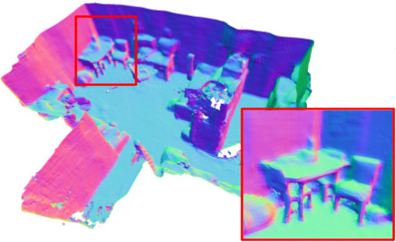
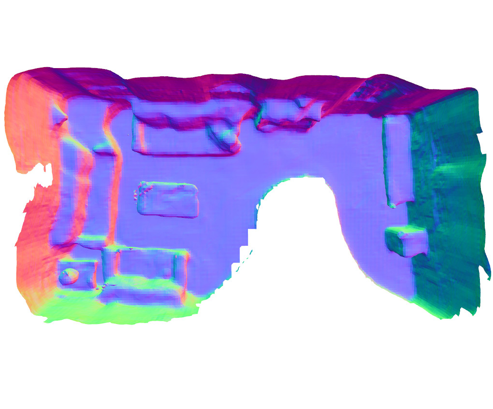
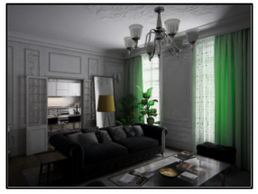
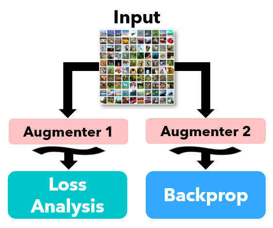
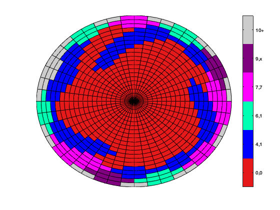

|
Alex Rich
I'm a PhD student in computer science at UCSB, advised by Tobias Höllerer. I am broadly interested in machine learning, computer vision, and computer graphics. My research focuses on multi-view stereo and 3D reconstruction, with applications in augmented and virtual reality, autonomous navigation, and more.
I earned a B.S. from UCSB in mathematics, where I worked with Kenneth C. Millett on knot theory and the analysis of common subknots in minimal prime knot presentations.
Email /
Github
|
|
|

|
3DVNet: Multi-View Depth Prediction and Volumetric Refinement
Alexander Rich,
Noah Stier,
Pradeep Sen,
Tobias Höllerer
3DV, 2021
arXiv
We introduce a deep multi-view stereo network that jointly models all depth maps in scene space, allowing it to learn geometric priors across entire scenes. It iteratively refines its predictions, leading to highly coherent reconstructions.
|
|

|
VoRTX: Volumetric 3D Reconstruction with Transformers for Voxel-wise View Selection and Fusion
Noah Stier,
Alexander Rich,
Pradeep Sen,
Tobias Höllerer
3DV, 2021
(Oral Presentation)
project page
/
arXiv
We introduce a 3D reconstruction model with a novel multi-view fusion method based on transformers. It models occlusion by predicting projective occupancy, which reduces noise and leads to more detailed and complete reconstructions.
|
|

|
Using Synthetic Data Generation to Probe Multi-View Stereo Networks
Pranav Acharya,
Daniel Lohn,
Vivian Ross,
Maya Ha,
Alexander Rich,
Ehsan Sayyad,
Tobias Höllerer
ILDAV Workshop, Adjunct Proceedings of ICCV, 2021
PDF
We introduce a synthetic data generation pipeline, which produces image sequences for multi-view stereo methods given 3D scene models as input. We utilize this pipeline to study existing multi-view-stereo depth-prediction methods. Among other results, we find that camera height and vertical camera viewing angle are the parameters that cause the most variation in depth-prediction errors on these image sequences.
|
|

|
Augmentation Strategies for Learning with Noisy Labels
Kento Nishi,
Yi Ding,
Alex Rich,
Tobias Höllerer
CVPR, 2020
arXiv
We propose Augmented Descent, a data augmentation strategy for training deep classifiers robust to incorrect labels in the training set. This technique works by using one set of augmentations for loss modeling tasks common to existing noise-robust training methods, while using a separate set of augmentations for backpropagation.
|
|

|
More Knots in Knots: a study of classical knot diagrams
Kenneth C. Millett,
Alex Rich
Journal of Knot Theory and its Ramifications, 2017
PDF
We perform a comprehensive study of subknots in minimal prime knot presentations through 15 crossings. We find among this set of 313,258 prime knot presentations, 99.83% contain a trefoil subknot and every knot contains either a trefoil subknot or a figure-eight subknot.
|
|
{kind=link}